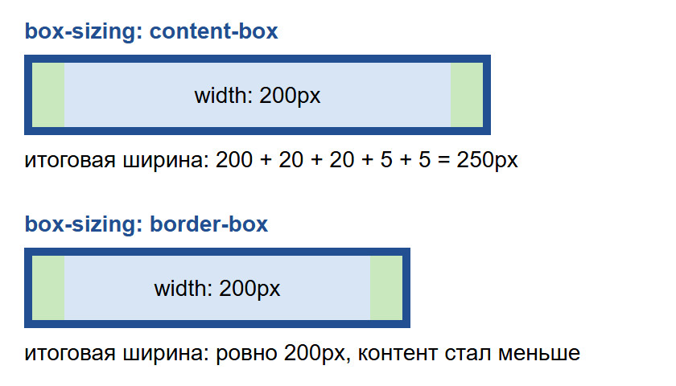
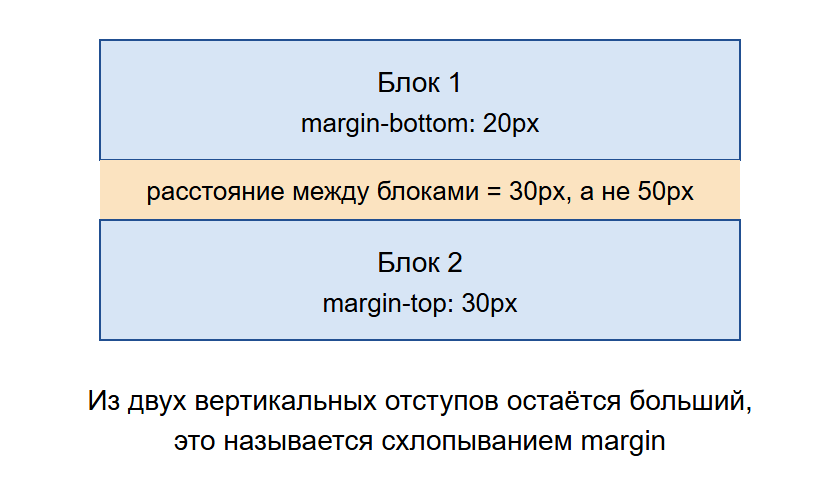
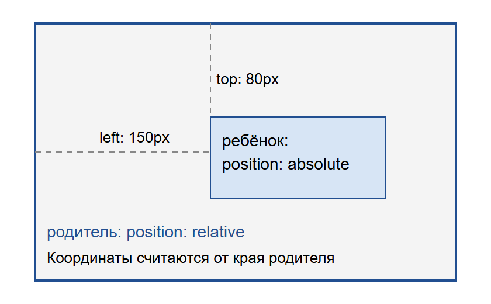

Блочная модель CSS
Для браузера любой элемент на странице - это прямоугольник. Даже если он выглядит как круг, как шляпка гриба в моем рисунке на CSS, на самом деле это прямоугольник со скругленными углами. Правила, по которым считается размер такого прямоугольника, называются блочной моделью.
Из чего состоит блок

Блок состоит из четырех слоев, которые идут от центра к краю:
- content - само содержимое, его размер задается через
widthиheight; - padding - внутренний отступ между содержимым и рамкой, на него распространяется фон блока;
- border - рамка;
- margin - внешний отступ, он отодвигает соседние элементы и всегда прозрачный.
Посмотреть все эти слои можно в браузере. Нужно нажать F12, выбрать элемент и открыть вкладку со стилями. Там будет такая же схема с реальными числами.
Почему блок оказался шире

По умолчанию width задает только ширину содержимого, а внутренние отступы и рамка прибавляются сверху. Если поставить ширину 200 пикселей, отступы по 20 и рамку по 5, то блок на экране займет 250 пикселей. Из-за этого блоки часто перестают помещаться в ряд.
Чтобы считать было проще, используют такое правило:
* {
box-sizing: border-box;
}Теперь width означает полную ширину вместе с отступами и рамкой, а содержимое просто становится меньше.
Схлопывание отступов

Вертикальные внешние отступы соседних блоков не складываются. Если у верхнего блока стоит margin-bottom: 20px, а у нижнего margin-top: 30px, то между ними будет 30 пикселей, а не 50. Это называется схлопыванием.
С горизонтальными отступами такого не происходит. Внутри flex-контейнера отступы тоже не схлопываются, поэтому там считать проще.
Позиционирование

Обычно блоки идут друг за другом, но элемент можно вынуть из потока с помощью position: absolute. Тогда он не занимает места, а его положение задается через top, left, right и bottom.
Координаты считаются от ближайшего родителя, у которого указан position: relative. Если такого родителя нет, то они будут считаться от всей страницы. Это самая частая ошибка: забыть про relative, а потом искать, куда улетел блок.